01 Accessibility
접근성은 옵션이 아니라 기본
KWCAG 기준을 반영한 마크업 개선, 키보드 접근, 스크린 리더 대응은 물론 웹접근성 품질마크(WA) 취득 경험까지 실무에서 반복적으로 다뤘습니다.
KEEP, KONEDU, PVCP
👋🏻THANKS FOR STOPPING BY
단단한 마크업 위에 오래 유지되는 화면을 만듭니다.
접근성, 반응형, 인터랙션을 함께 고려하는 웹 퍼블리셔입니다.
Strength 💪🏻
01 Accessibility
KWCAG 기준을 반영한 마크업 개선, 키보드 접근, 스크린 리더 대응은 물론 웹접근성 품질마크(WA) 취득 경험까지 실무에서 반복적으로 다뤘습니다.
KEEP, KONEDU, PVCP
02 Responsive
반응형 웹부터 관리자 화면, TV/태블릿 환경까지 디바이스별 기준을 직접 설계하고, 브레이크포인트마다 레이아웃과 인터랙션이 무너지지 않도록 구현합니다.
A-cha, Home Learn, CNR
03 Collaboration
공공·교육·뷰티·바이오 등 다양한 산업군의 프로젝트를 거치며 쌓은 커뮤니케이션 경험을 바탕으로, 요구사항을 빠르게 정리하고 디자인 시스템과 개발 구조 사이에서 유지보수 가능한 결과물을 만듭니다.
Dr.G, Macrogen, KSAEDU
04 Framework
정적 마크업에 머무르지 않고, 컴포넌트 구조와 상태 흐름을 이해한 상태로 React·Vue 프론트엔드 환경에서 퍼블리싱과 인터랙션을 구현합니다.
Kidsnara, Enuma, MyPofol
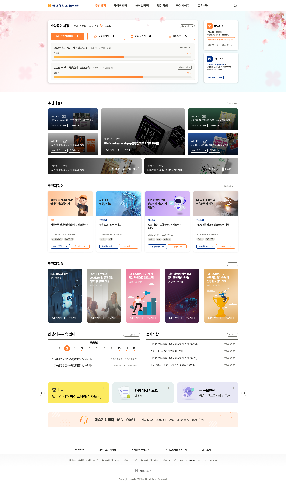
현대해상 임직원 대상 이러닝 플랫폼 신규 구축 마크업을 단독 담당했습니다. PC 시안만으로 태블릿·모바일 반응형을 직접 설계했습니다.

공공 포털 신규 구축 프로젝트로, 공공 UI 패턴(KRDS)과 KWCAG 접근성 기준을 반영해 메인부터 서브 화면까지 웹접근성 품질인증(WA) 수준에 맞춰 퍼블리싱했습니다.

글로벌 유전체 기업 Macrogen의 사이트 리뉴얼 작업으로, PC와 모바일이 별도 프로젝트로 분리되어 있어 두 환경의 마크업과 인터랙션을 각각 구현했습니다.
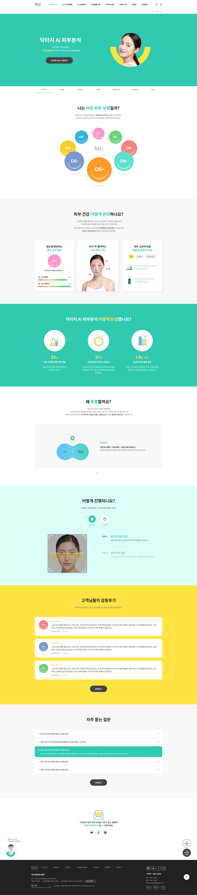
화장품 브랜드 Dr.G의 브랜드 사이트 리뉴얼 작업으로, SVG·Lottie·canvas 차트를 직접 커스터마이징해 AI 피부분석 결과를 시각적으로 표현했습니다. 다양한 인터랙션을 안정적으로 구현했습니다.
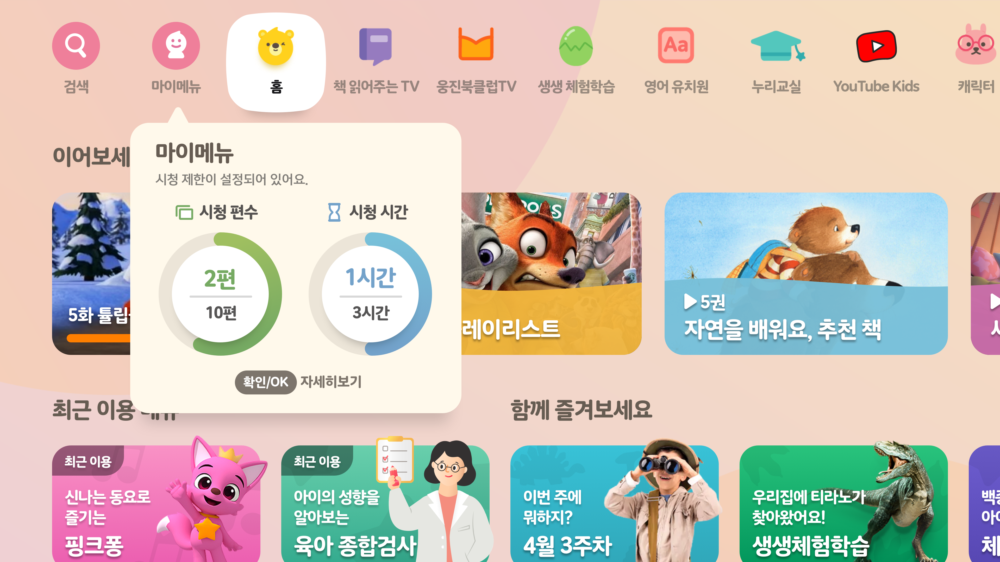
네이티브 화면을 웹으로 변환한 프로젝트로, React 기반 신규 카테고리 페이지 확장과 FHD/HD 해상도 대응은 물론 기존 화면 리뉴얼 작업까지 함께 담당했습니다.
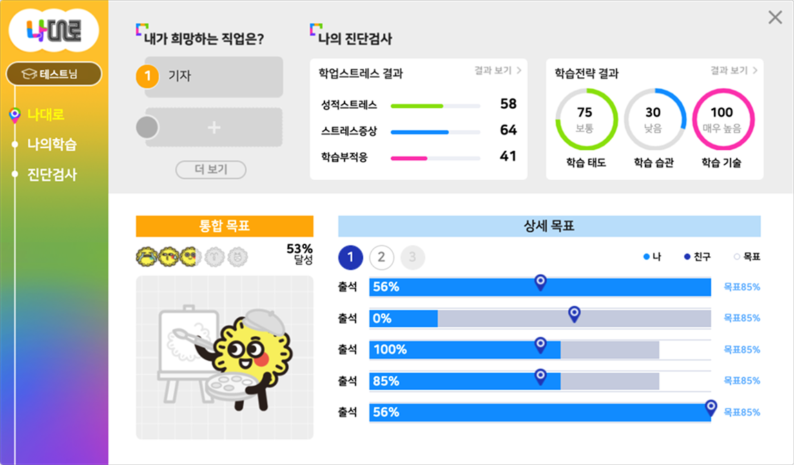
홈런 마켓 웹, 에듀·판매 관리자 페이지, 초·중등 태블릿 콘텐츠까지 아우르는 i-SCREAM 홈런 퍼블리싱 작업으로, 반응형 웹 구축부터 다국어 관리자 페이지, 500여 페이지 규모의 태블릿 콘텐츠 단독 구현까지 폭넓게 담당했습니다.
현대해상 직원·임원용 이러닝 교육 플랫폼인 스마트연수원과 기업 소개 사이트인 현대 C&R, 두 사이트의 신규 구축 마크업을 단독으로 담당했다.
디자인 시안은 PC 화면만 제공되어, 태블릿·모바일 브레이크포인트의 레이아웃과 인터랙션을 직접 설계하며 반응형 대응을 구현했다.
국가보훈부 산하 보훈문화 콘텐츠 통합 포털은 신규 구축 프로젝트로, 전체 퍼블리싱을 단독으로 담당했다.
보훈자료, 행사·전시, 체험·교육 등 다양한 카테고리의 콘텐츠를 통합 제공하는 대형 공공 포털로, 메인부터 기능성 서브 페이지까지 HTML/SCSS 마크업 전체를 구현했다.
디자인은 행정안전부 KRDS를 기반으로 제작되었으며, 공공 디자인 시스템의 가이드에 맞춰 컴포넌트 구조를 일관되게 구현하는 데 집중했다. 성격이 다른 페이지들을 다루면서 공공 UI 패턴에 대한 이해를 높일 수 있었다. 웹 접근성은 초기 마크업 단계부터 KWCAG 2.2 기준을 적용했다.
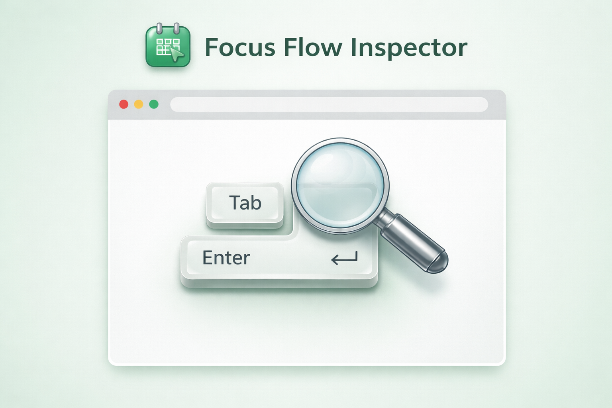
Tab 키로 일일이 확인하던 키보드 포커스 검사를 자동화하기 위해 Playwright 기반 테스트 도구를 직접 설계했고, Claude로 구현했다. 포커스 이동 경로를 추적·기록하는 로직과 모달, 비동기 렌더링 등 실제 서비스의 예외 케이스 처리를 직접 담당했으며, AI로 테스트 케이스 정리를 보조받되 구조 설계와 디버깅은 직접 수행했다. 그 결과 반복적인 접근성 검증 작업을 자동화할 수 있는 기반을 구축했다.
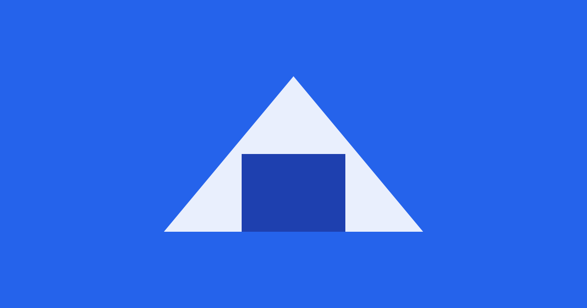
국토교통부 실거래 공공 API를 기반으로 전국 아파트 매매 데이터를 조회·분석하는 웹 애플리케이션을 설계했고, Claude로 개발했다. React Query의 staleTime 캐싱과 서버 인메모리 캐시를 병행 적용해 시군구 단위 조회 시 발생하던 중복 API 요청과 응답 지연 문제를 해결했으며, AI로 일부 구현을 보조받되 아키텍처 설계와 성능 최적화는 직접 진행했다. 그 결과 중복 요청을 약 60% 줄이고 초기 로딩 속도를 개선했다.
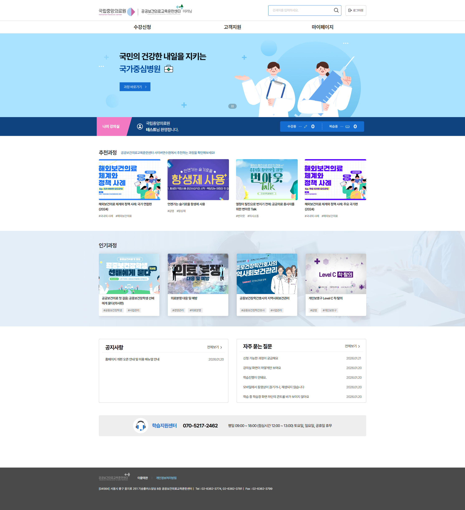
K·ONEDU 프로젝트 기반으로 메인·서브 페이지 전반에 동일한 UI 규칙을 적용했다. 웹 접근성 품질마크 취득을 목표로 키보드 접근성, 스크린 리더 대응, 명확한 정보 구조 제공 등 관련 지침을 기준으로 마크업과 UI를 개선하였으며, 접근성 점검 항목을 기준으로 자체 검수와 수정 작업을 반복 수행하였다.
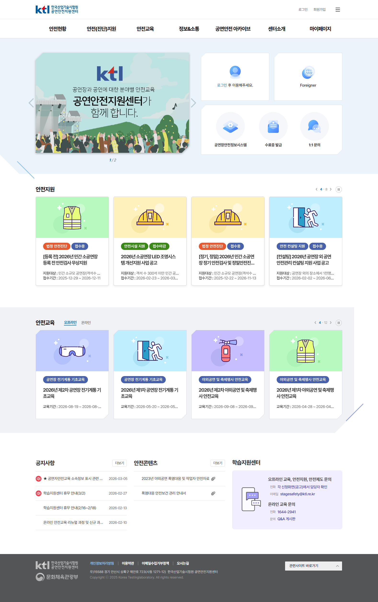
K·ONEDU 프로젝트 기반으로 공통 컴포넌트와 레이아웃 구조를 정리하고, 메인·서브 페이지 전반에 동일한 UI 규칙을 적용하여 서비스 전반의 화면 일관성과 유지보수성을 확보하였다.
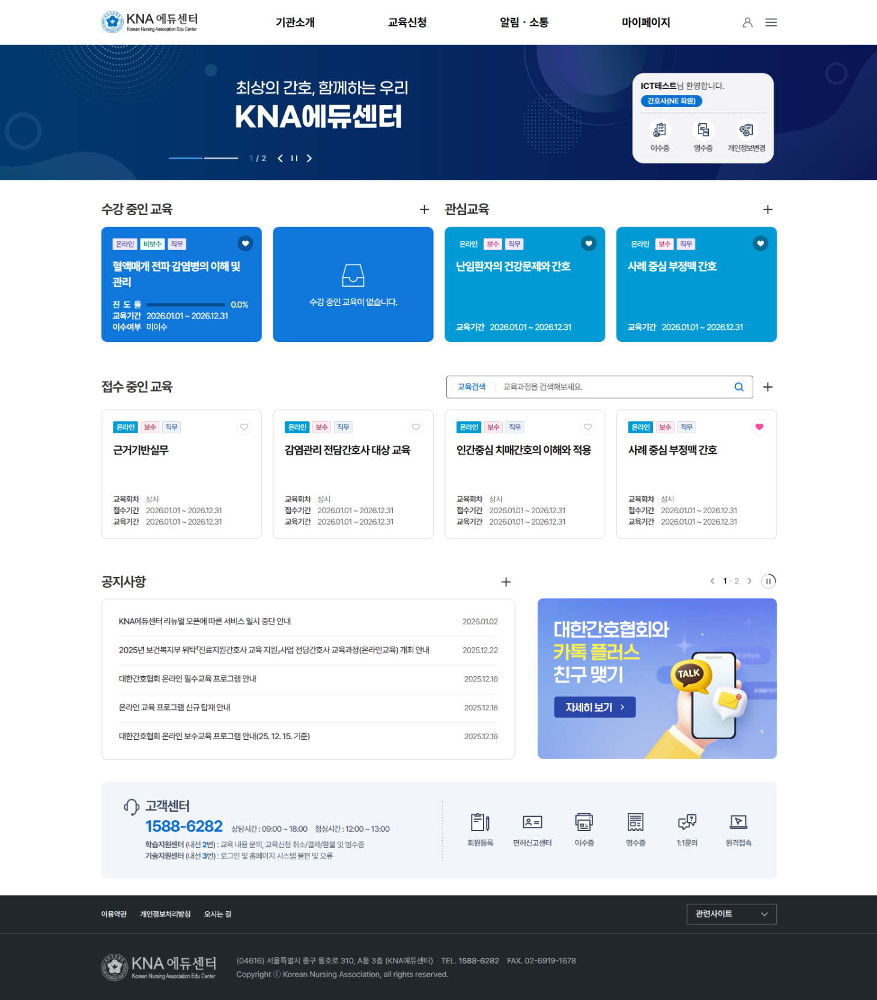
KNA 에듀센터 웹사이트 구축 프로젝트에 참여하여 공공기관 웹 표준 및 접근성 기준을 반영한 퍼블리싱을 수행하였다. 구조적인 마크업 개선과 협업 중심의 작업 프로세스를 통해 안정적인 운영이 가능한 교육 플랫폼을 구현하였다.
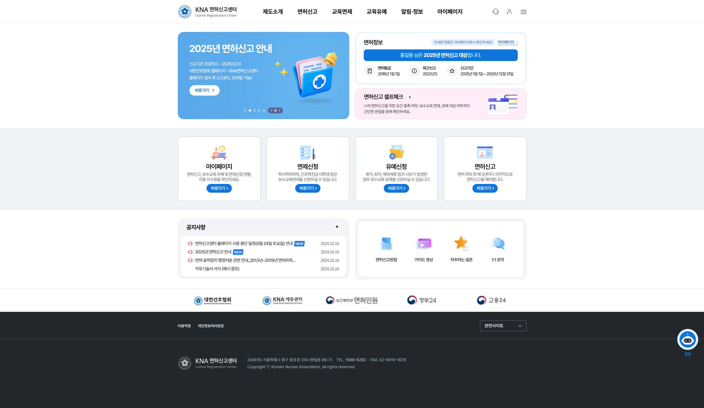
KNA 면허센터 웹사이트 구축 프로젝트에 참여하여 공공기관 웹 표준 및 접근성 기준을 반영한 퍼블리싱을 수행하였다. 구조적인 마크업 개선과 협업 중심의 작업 프로세스를 통해 안정적인 운영이 가능한 플랫폼을 구현하였다.
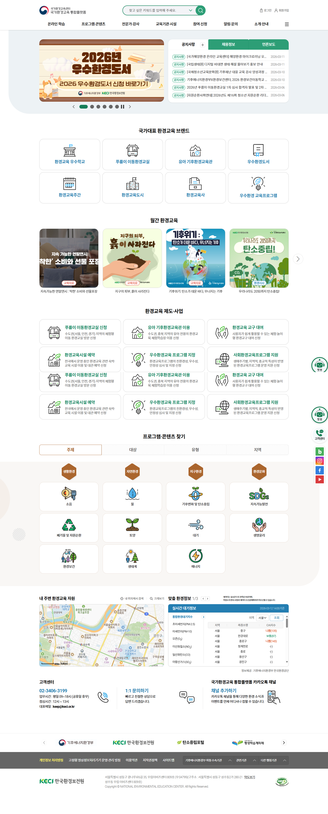
이직 후 처음으로 인수인계를 받아 진행한 프로젝트로, 국가환경교육 통합플랫폼의 유지보수와 고도화 작업을 전반적으로 담당하고 있다. 기존 기능의 안정적인 운영을 지속하는 동시에, 사용자 편의성과 시스템 성능 개선을 목표로 한 고도화 작업을 병행하며 기획·디자인·개발 부서와 협업하고 있다.
특히 공공기관 서비스 특성에 맞춰 웹접근성 기준을 충족하는 작업을 수행하였으며, KWCAG 2.1 기준에 따라 마크업 구조 개선, 키보드 접근성 보완, 대체 텍스트 및 ARIA 속성 적용 등을 진행했다.
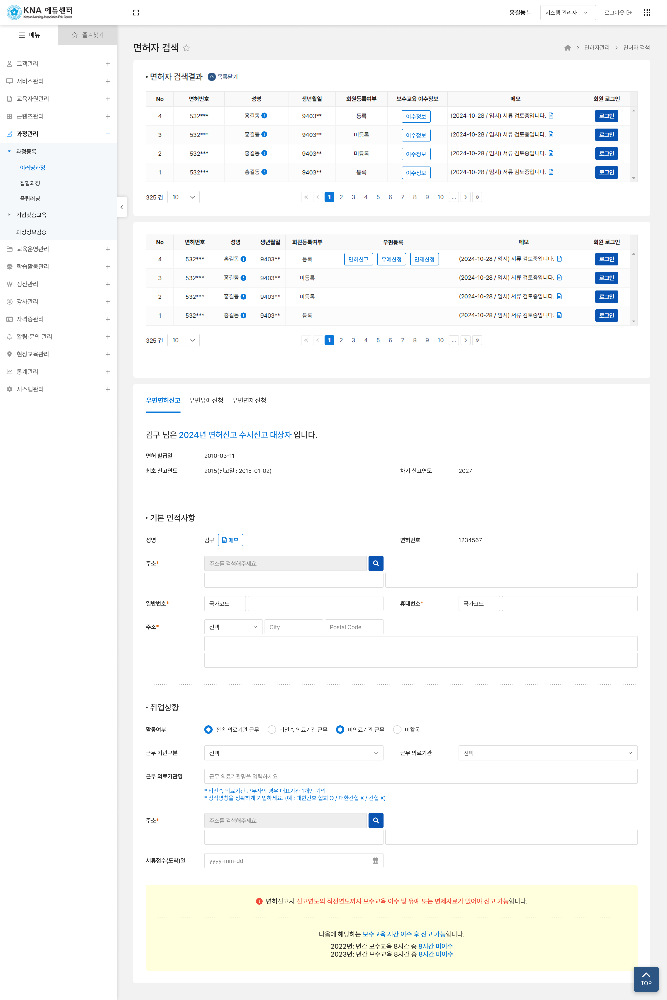
KSAEDU 관리자 프로젝트를 기반으로, 기존 마크업 구조와 기능 흐름을 최대한 유지하면서 새롭게 적용된 디자인 가이드에 맞춰 퍼블리싱을 진행했다. 마크업 수정이 제한적인 상황에서도 디자인과 기능 간의 균형을 고려해, UI 요소의 스타일 개선 및 시각적 일관성을 확보하는 데 중점을 뒀다.
디자인부터 개발·배포까지 혼자 진행한 개인 프로젝트. React 19 + React Router 기반으로 구축하고, GSAP SplitText·ScrollTrigger와 AOS로 인터랙션을 구현했다. 갤러리는 LightGallery, 지도·공유는 Kakao Maps·Link SDK를 사용했으며, Supabase(PostgreSQL + Storage)로 RSVP 데이터를 관리하고 Vercel로 배포했다. Google Analytics 4로 방문자 분석도 연동했다.
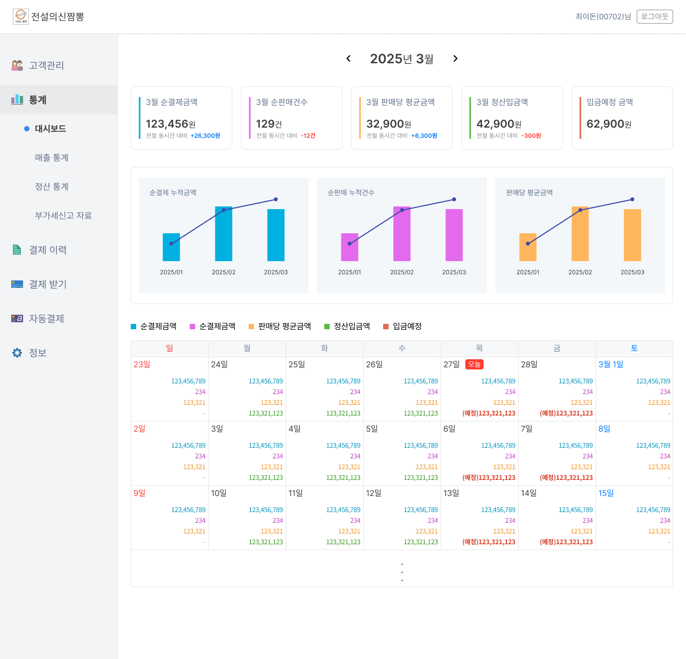
이 프로젝트는 소상공인 및 가맹점주 대상의 판매·정산 관리 플랫폼 'Hansolpay' 웹사이트 구축 작업이었다. 대시보드, 고객관리, 자동결제, 정산 통계 등 다양한 기능을 포함하고 있었으며, 업무 중심의 UI에 맞춰 마크업 구조 정리와 스타일 통일에 중점을 두고 퍼블리싱을 진행했다. 복잡한 테이블 구성이 꽤나 많았지만, 컴포넌트 단위로 나누어 구조화하면서 작업을 수월하게 마무리할 수 있었다.
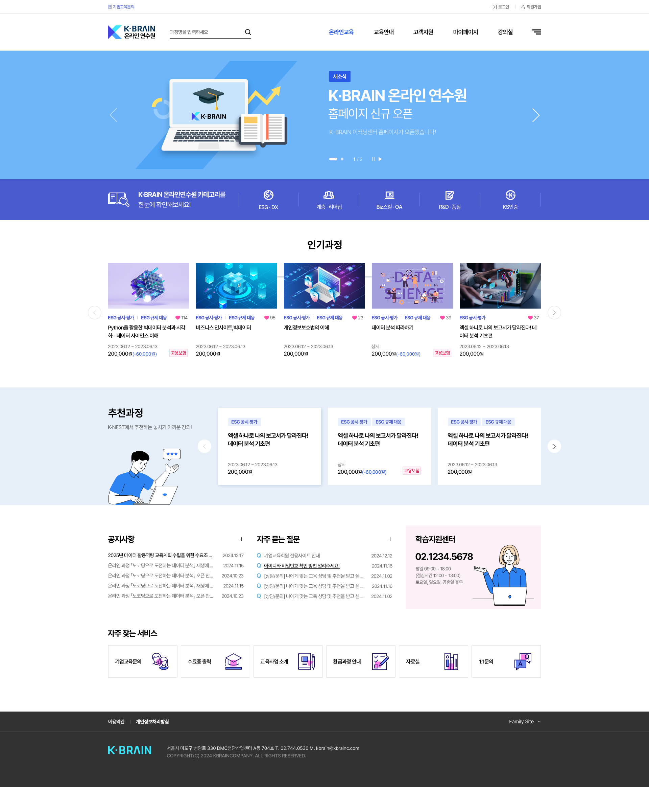
사내 B2C 이러닝센터 프로젝트에서 퍼블리싱과 인터랙션 구현을 담당했다. 기존 데모 사이트 구조를 참고해 디자인 시안을 기반으로 작업을 진행했으며, 실제 서비스 수준의 품질을 목표로 개발 환경에서 최적화 작업까지 함께 진행했다.
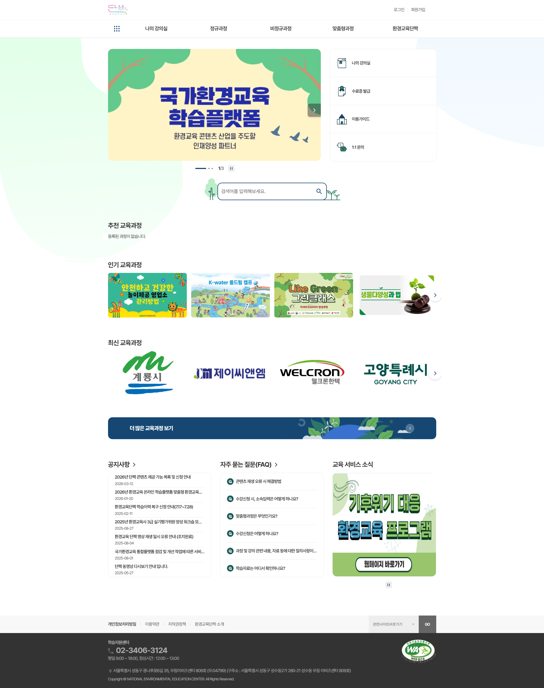
타사에서 운영하던 프로젝트를 이관받아 웹 접근성 마크(WA) 취득을 담당했다. 2025년 1월 심사항목이 22개에서 33개로 확대된 시점이었던 만큼, 기준을 면밀히 파악하고 개발자와 긴밀히 협업하며 인증을 완료했다.
확대된 기준에 맞춰 마크업 구조를 재검토하고, 키보드 접근성 보완과 ARIA 속성 적용 등을 체계적으로 수행한 경험이었다.
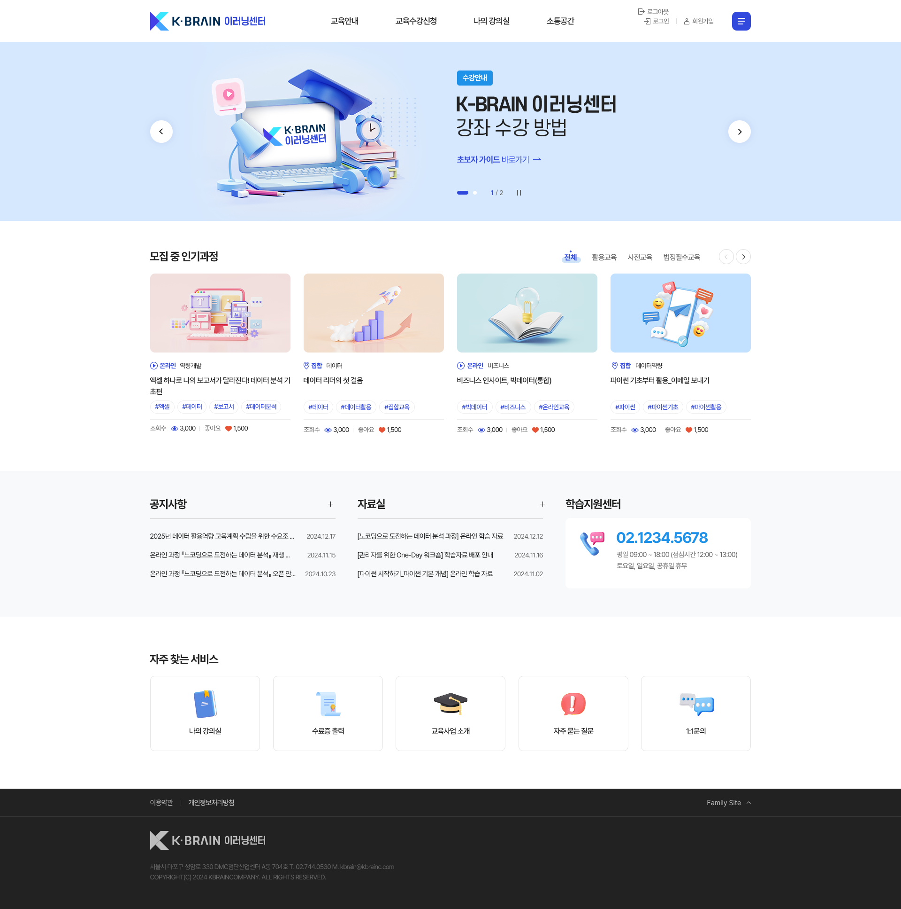
사내 이러닝센터 데모 사이트 프로젝트에 참여하여, 디자인 시안을 바탕으로 퍼블리싱 및 인터랙션 구현을 맡았다. 사내 테스트 목적의 데모였지만, 실제 서비스 수준의 완성도를 목표로 진행한 프로젝트였다.
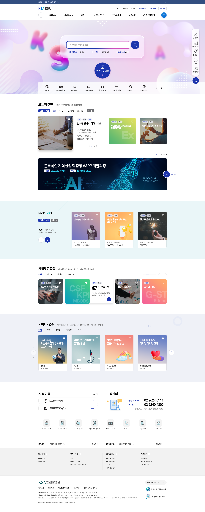
대략 9~10개월 동안 고객사의 지속적인 요청으로 인해 수많은 수정 작업을 거치며 장기전이 되어버린 프로젝트였다. 이후에도 추가적인 개선과 기능 확장을 위해 고도화 작업을 진행해왔고, 마침내 모든 과정을 성공적으로 마무리했다.
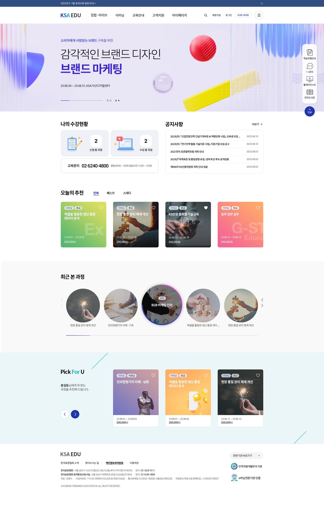
KSAEDU 사용자 프로젝트와 더불어 고객사의 지속적인 요청으로 인해 수많은 수정 작업을 거치며 장기전이 되어버린 프로젝트였다. 사별 사이트 역시 추가적인 개선과 기능 확장을 위해 고도화 작업을 진행해왔고, 모든 과정을 성공적으로 마무리했다.
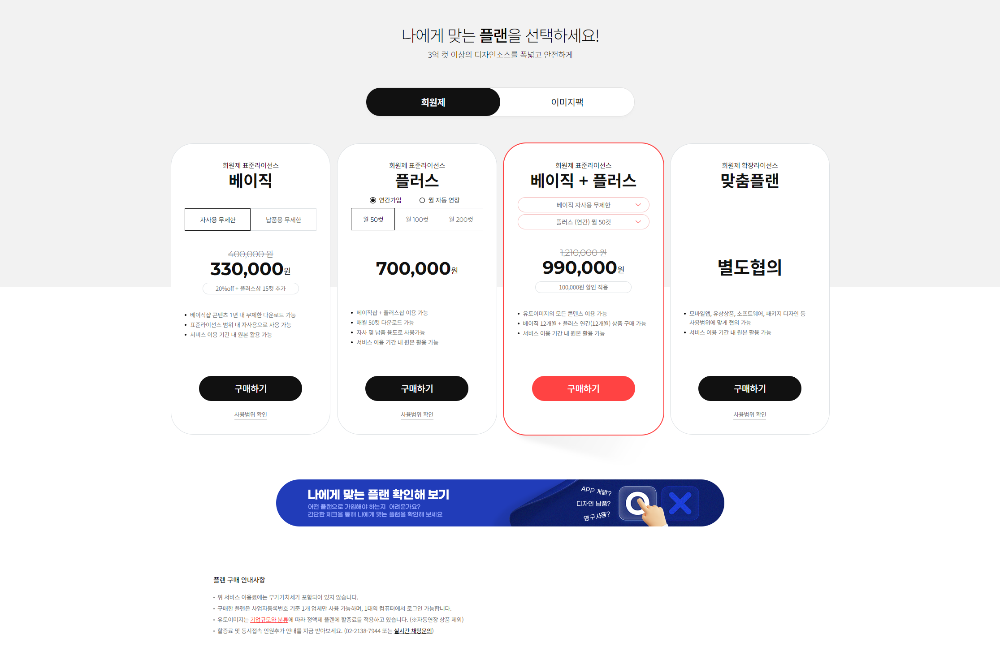
고객사의 요청으로 결제 기능 리뉴얼 작업을 진행하게 되었다. 사용자 흐름을 보다 직관적으로 개선하기 위해 UI/UX 전반을 조정하고, 이에 맞춰 마크업도 재작성했다. 작업 특성상 빠른 대응이 중요한 상황이었으나, 개발 및 테스트를 효율적으로 수행해 예정된 일정 내에 결과물을 전달했다.
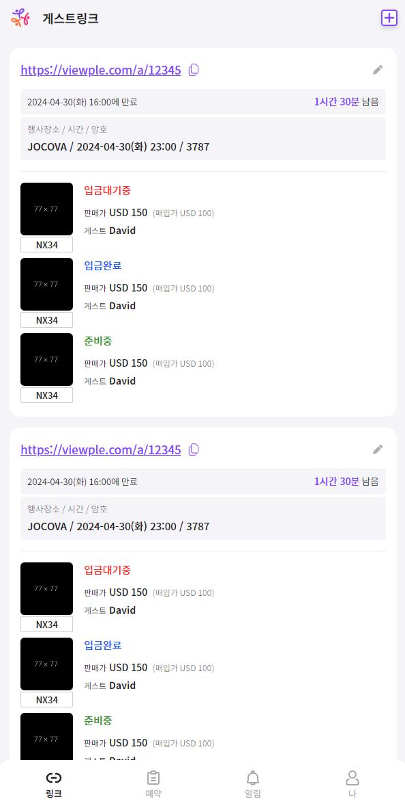
특별한 이슈 없이 순조롭게 진행된 모바일 퍼블리싱 작업으로, 약 30~40페이지 분량을 이틀 만에 마무리했다. 전체적인 구조가 명확하고 커뮤니케이션도 원활해, 빠르고 효율적인 퍼블리싱이 가능했다.
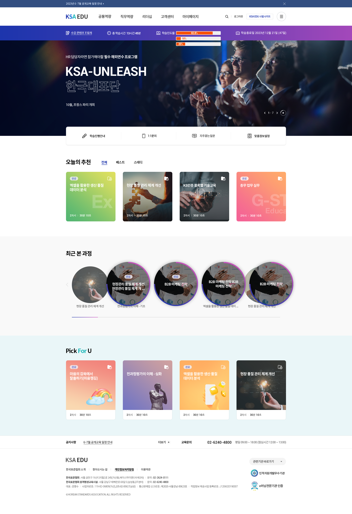
퍼블리싱을 완료하고 일부 개발 작업까지 진행했지만, 아쉽게도 수주에 실패하며 최종적으로 오픈되지 못한 프로젝트였다. 비록 정식 서비스로 이어지지는 않았지만, 퍼블리싱 및 개발 과정에서 얻은 경험과 노하우는 의미 있는 자산이 되었다.
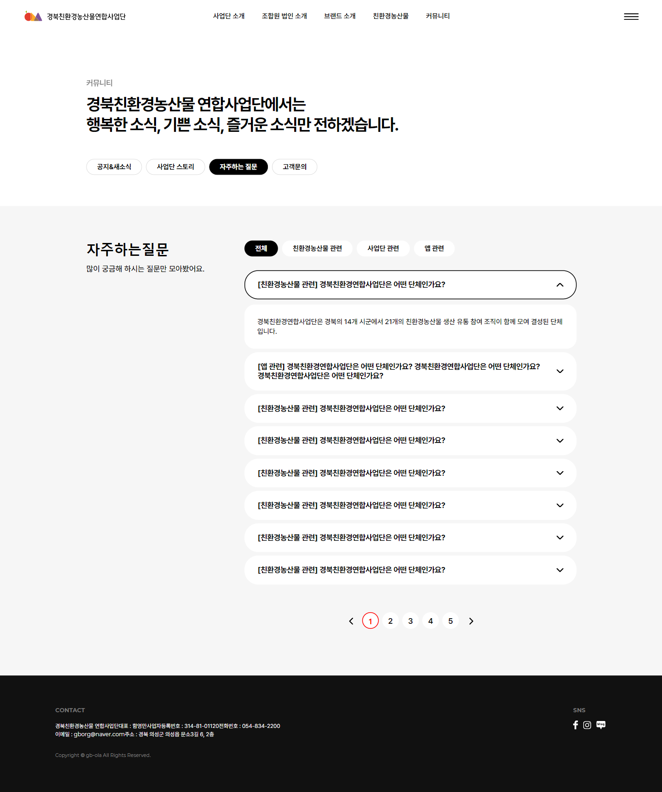
급하게 맡게 된 프로젝트였지만, 신속한 작업 처리와 원활한 커뮤니케이션 덕분에 큰 어려움 없이 진행할 수 있었다. 제한된 일정 속에서도 요구사항을 빠르게 파악하고 반영하여 효율적으로 작업을 수행했다. 예상보다 빠르게 마무리할 수 있었고, 고객사의 만족도 또한 높아 보람을 느낀 프로젝트였다.
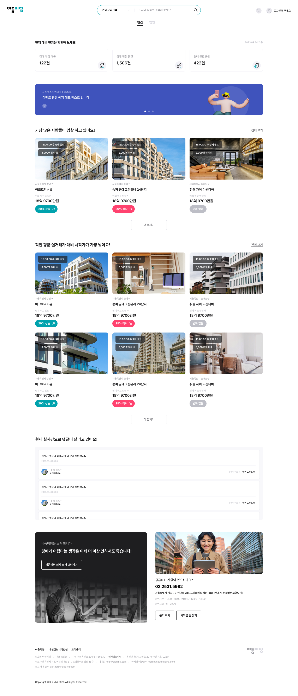
부동산 경매 반응형 홈페이지 (React). 디자인 확정 지연으로 일정이 촉박해졌지만, 10/29 확정 → 10/31 전 페이지 완료라는 집중 작업으로 기한 내 납품했다.
초기 요청 사항에는 차트 구현 방식에 대한 제약 조건이 명시되어 있지 않아, chart.js를 활용해 작업을 진행했다. 하지만 모든 구현을 마친 이후, 개발자로부터 d3.js로 구현해달라는 요청을 뒤늦게 전달받아 전체 차트 로직을 새롭게 구성해야 했다. chart.js와는 사용 방식이 전혀 다른 d3.js를 처음 다뤄본 상황이어서 구현에 다소 시간이 소요되었고, 익숙하지 않은 라이브러리를 빠르게 학습하며 대응해야 했던 점이 까다롭게 느껴졌다.
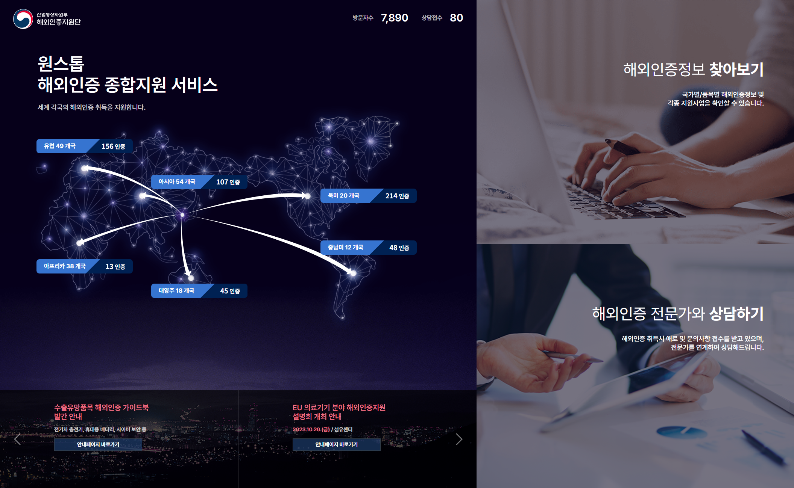
PC 디자인만 제공된 상태에서 시작되었지만, 이후 모바일 반응형 작업 요청이 추가되어 직접 대응하게 되었다. 기존 디자인의 일관성을 유지하면서도 다양한 디바이스에서 최적화된 레이아웃을 구현하는 데 집중했다.
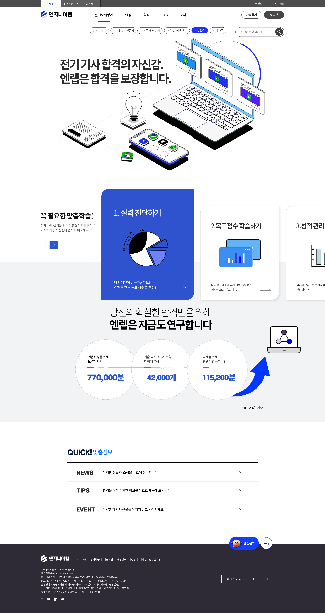
아이비 김영의 신규 제안으로 진행한 반응형 웹 프로젝트 (약 2개월). 초기 가이드 설정 시 디자이너와의 협업 어려움을 소통으로 극복하고 안정적으로 마무리했다.
신규 프로젝트인 OVu(감정 다이어리) 티저 사이트로, 2~3일 내에 작업을 완료했다. GSAP을 이용한 Scroll 컨트롤 및 애니메이션 구현이 주요 작업으로, 다이내믹한 효과를 부여해 사용자에게 흥미로운 경험을 제공할 수 있었다.
Mettit은 메타버스 크리에이터 커뮤니티 사이트로, 초기에는 모든 작업이 외주로 진행되었던 프로젝트였다. 이후 내부에서 관리할 필요성이 생겨 담당 업체가 인수인계를 받았고, 나는 새로 영입되어 유지보수 및 리뉴얼 작업을 맡게 되었다.
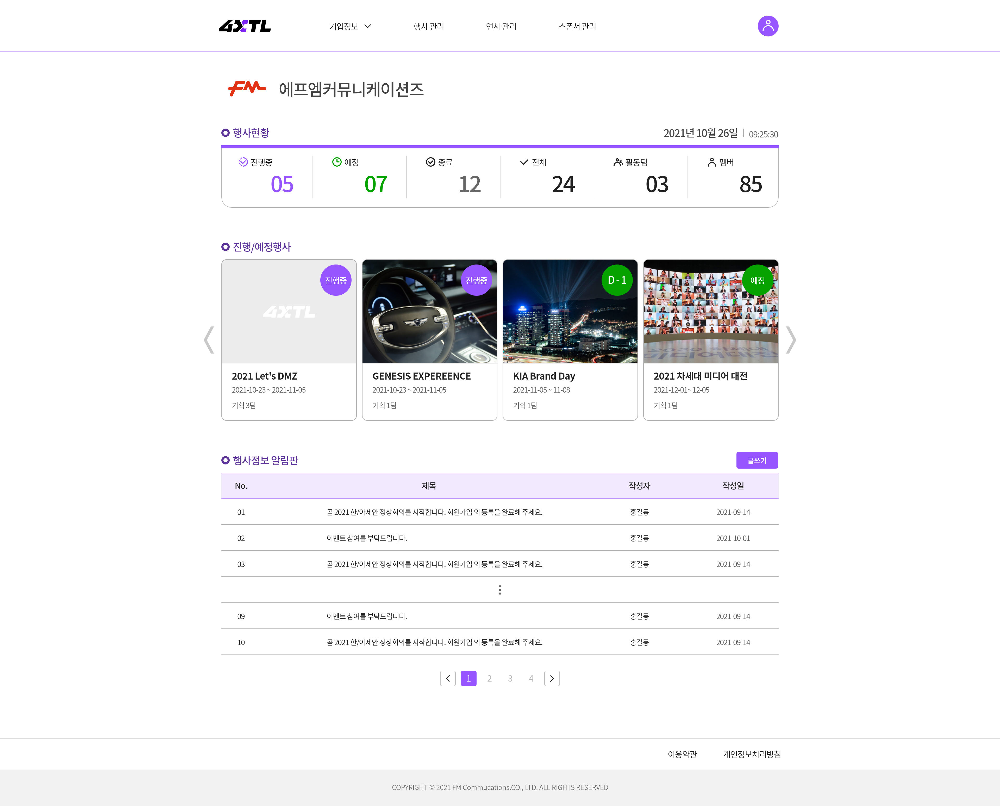
라이브 솔루션 기반의 웹사이트로, 4xtl·웨비나·콘솔·웹 빌더 총 4가지 서비스를 제공하며 React 기반으로 구축되었다. 개발이 먼저 진행된 후 퍼블리싱이 들어가는 구조였기 때문에 초반에는 프로젝트의 흐름을 파악하는 데 다소 시간이 필요했다.
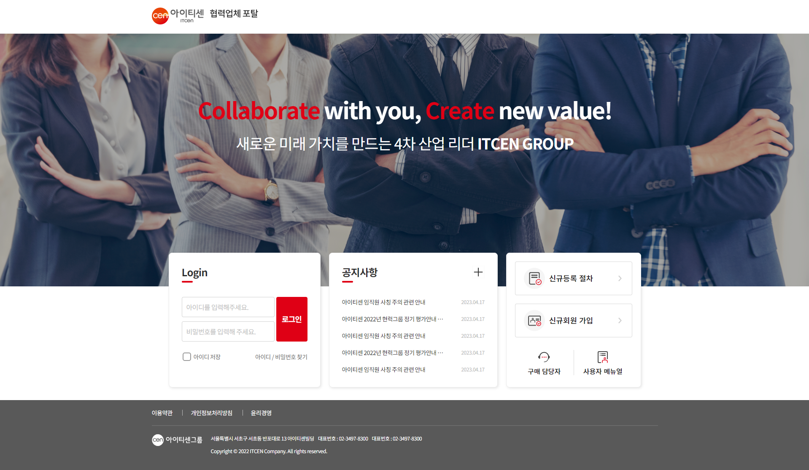
이 프로젝트는 전 직장의 디자이너 팀장님의 요청으로 진행한 작업으로, 기존 사이트의 일부 페이지를 리뉴얼하는 내용이었다. 디자인과 기능 개선을 위한 요구사항을 받은 뒤, 변경이 필요한 부분을 신속하게 파악해 퍼블리싱을 진행했으며, 전체 과정은 예상보다 순조롭게 흘러가 큰 어려움 없이 마무리할 수 있었다.
이 프로젝트는 역대급 난이도의 작업이었다. 프로젝트 자체의 복잡도도 높았지만, 기획, 디자인, 고객사 간 커뮤니케이션이 원활하지 않아
전체적인 진행이 매우 어려웠다. 오픈을 앞둔 시점까지 기획 변경이 반복되었고, 퍼블리싱뿐 아니라 개발팀의 부담도 상당했다.
진행 과정은 쉽지 않았지만, 이 경험을 통해 커뮤니케이션의 중요성을 다시금 실감했다. 이전에도 협업의 어려움을 느낀 적은 있었지만, 이번 프로젝트처럼 끝까지 조율이 되지 않았던 경우는
드물었다. 그만큼 상황을 유연하게 대처하고, 필요한 내용을 빠르게 정리·전달하는 능력이 중요하다는 것을 체감했다.
기술적으로는 SVG, Lottie 등 인터랙션 중심의 기능을 자주 활용하면서 관련 스킬을 크게 향상시킬 수 있었고, 캘린더 UI는 기존 플러그인을 커스터마이징해 프로젝트에 맞게
재구성했다. 차트는 기존에 주로 사용했던 chart.js가 vw 기반 레이아웃에 적합하지 않아 사용하지 못했고, 대신 CodePen에서 canvas를 이용한 순수 JavaScript
차트 예제를 참고해 커스터마이징하여 적용했다.
처음부터 canvas 기반 차트를 직접 구현했다면 상당한 난이도가 있었겠지만, 참고 소스를 잘 응용한 덕분에 뷰포트 너비에 따라 유동적으로 크기가 조절되는 반응형 차트를 완성할 수
있었다.
많은 어려움 속에서도 다양한 기술을 실제로 적용해볼 수 있었고, 무엇보다도 예측 불가능한 상황 속에서 협업과 소통 역량을 실전에서 훈련할 수 있었던 점이 가장 큰 성과였다.
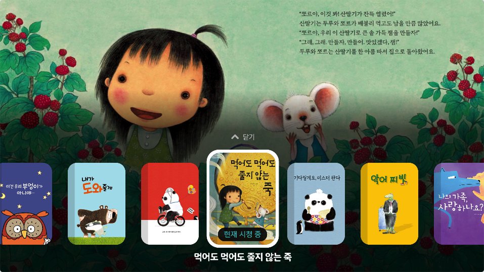
기존 LGU+ 아이들나라 4.0 프로젝트에 신규 카테고리 페이지들을 추가하는 작업이었다. 기존 시스템을 기반으로 페이지를 확장하는 구조였기 때문에 디자인이나 레이아웃에 큰 변경 없이 비교적 안정적으로 작업을 진행할 수 있었다.
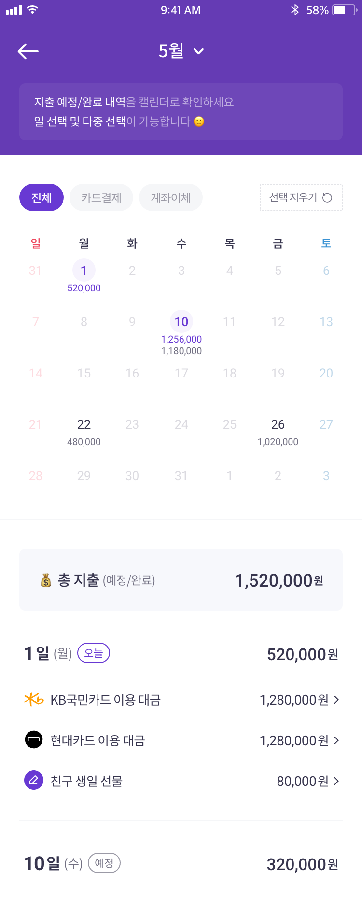
입사와 동시에 시작되어 퇴사할 때까지 전 과정을 혼자 맡아 진행했던 작업이었다. 디자인 완성도가 높아 퍼블리싱하는 과정 자체가 즐거웠고, 세부 디테일을 살려 구현하는 데에도 큰 보람을 느꼈다. Chart와 Calendar 페이지는 난이도가 높은 편이었으나, 구글링을 통해 열심히 해결하며 큰 어려움 없이 마무리할 수 있었다.

첫 번째 프로젝트는 블록 컴포넌트로 웹을 만드는 작업으로, 각 블록 단위로 퍼블리싱을 진행하는 프로젝트였다. 난이도 자체는 매우 낮았지만, 반응형 웹으로 진행되어 PC 디자인만 제공되었고, 태블릿과 모바일 디자인은 내가 알아서 해야만 했다. 사실, 이 부분이 오히려 나에게는 더 유리했을 수도 있었고, 자유롭게 반응형 웹을 구현할 수 있는 기회가 되었다.
두 번째 프로젝트는 리액트 환경에서 관리자 페이지를 퍼블리싱하는 작업이었다. 리액트 프로젝트는 블록 컴포넌트 퍼블리싱에 비해 난이도가 높았지만, 개발자들과의 원활한 커뮤니케이션 덕분에 작업이 편안하게 진행되었다. 특히, 요청한 회사의 개발자들과 긴밀히 협력하면서 진행할 수 있었던 점이 큰 도움이 되었다. 두 프로젝트 모두 다양한 기술을 경험할 수 있었고, 협업을 통해 더 효율적으로 작업을 완수할 수 있었다는 점에서 매우 값진 경험이었다.
Macrogen 기존 웹사이트를 리뉴얼하는 프로젝트로, 처음으로 디자인 툴인 Figma를 사용해본 경험이 있는 프로젝트였다. 전반적으로 사이트에 많은 인터랙션이 포함되었고, 고객사와 디자인 팀의 끊임없는 요구 사항들이 주말과 야간에 계속해서 들어오면서 일정 관리와 커뮤니케이션 측면에서 중요한 교훈을 얻었다.

이 프로젝트는 기존 WordPress 기반 웹사이트를 Vue를 활용해 하드코딩 페이지로 변환하는 작업으로, 전 과정을 혼자 개발자로서 담당했다.
디자인 시안 없이 기존 페이지의 HTML 소스를 직접 분석하고 구현해야 했기 때문에, 초반에는 구조를 파악하는 데 시간이 소요됐다. 특히 WordPress 특성상 하나의 콘텐츠가 여러 엘리먼트에 중첩되어 있고, 스타일과 스크립트가 복잡하게 얽혀 있어 소스 분석에 어려움이 있었다.
그러나 전체 페이지 수가 많지 않았기 때문에 하나씩 구조를 정리하며 Vue 컴포넌트화 작업을 차근차근 진행할 수 있었고, 결과적으로 모든 페이지를 안정적으로 마무리할 수 있었다. 이번 작업을 통해 특히 Vue의 라이프사이클에 대한 이해가 깊어졌고, 컴포넌트 간의 데이터 흐름과 재사용 구조에 대해 실무적인 감각을 높일 수 있었다.
이 프로젝트는 LGU+ 아이들나라의 네이티브 화면을 웹으로 변환하는 작업으로, 퍼블리싱 전반을 처음부터 끝까지 구축 및 관리했다. 고객사와 직접 협의하며 작업을 진행했기 때문에, 실무 과정에서 커뮤니케이션 스킬을 크게 향상시킬 수 있었다.
작업 특성상 FHD/HD 화면을 각각 대응해야 했고, SCSS에서 함수를 활용해 해상도별로 스타일을 관리한 것이 주요 특징이었다. 또한 animate, marquee, color extraction 등 다양한 라이브러리를 React 환경에 직접 적용해보는 경험을 할 수 있었고, CSS 속성 중에서는 mask, clip을 처음 사용해보며 스타일링 영역에서도 새로운 시도를 할 수 있었다.
전반적인 퍼블리싱 난이도는 높지 않았지만, 마크업 구조를 개발 구조에 맞춰 설계해야 했고, FHD/HD 분기, 레이어 구조 등 프로젝트 특이사항이 많아 작업 전 구조에 대한 이해와 긴밀한 협업이 핵심이 된 프로젝트였다.
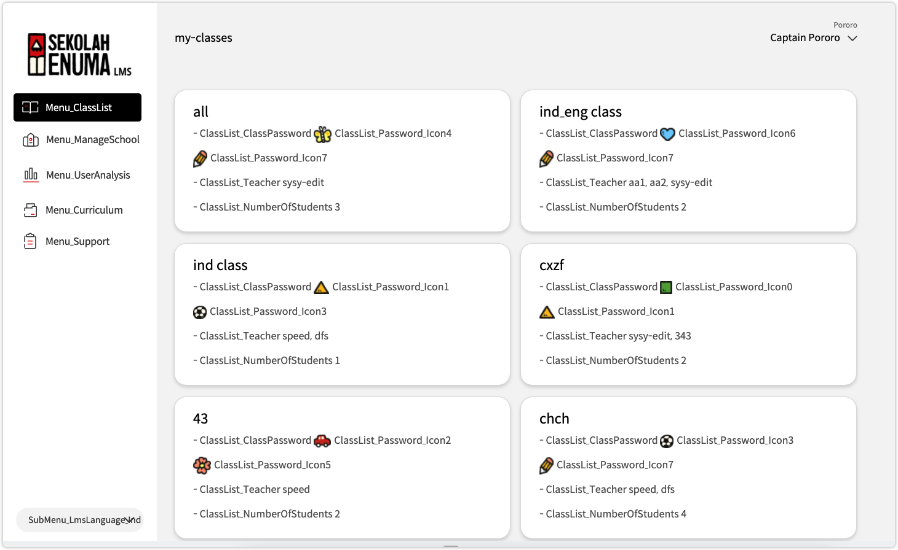
Enuma의 학생 관리 페이지 퍼블리싱 작업으로, Vue 환경에서 진행되었다.
AG Grid 라이브러리를 중심으로 구성된 테이블이 주를 이루었으며, 기본 구조를 파악한 뒤부터는 전반적인 퍼블리싱 작업을 무리 없이 진행할 수 있었다.
이 프로젝트는 초등 및 중등 콘텐츠를 통합해 구축한 총 500페이지 규모의 태블릿 전용 퍼블리싱 작업이었다. 전체 작업량이 매우 방대했으며, 특히 전체 페이지 중 약 30%는 디자인 시안 없이 태블릿 캡처 이미지만을 참고해 구현해야 하는 상황이었다. 그럼에도 불구하고 전체 퍼블리싱의 약 90%를 혼자서 담당했으며, 일정 역시 매우 촉박한 상태에서 작업을 진행해야 했다.
이번 프로젝트를 통해 가장 크게 느낀 점은 디자인 리소스의 명확한 제공이 작업 효율성에 미치는 영향이었다. 정리된 디자인 가이드가 제공된 화면은 빠르고 정확하게 구현할 수 있었던 반면, 리소스가 부족한 경우엔 해석과 추론에 많은 시간이 소요되었고, 이로 인해 퍼블리싱 과정에서 불필요한 반복 작업이 발생할 수 있다는 점을 체감했다. 이 경험은 결과적으로 작업 속도와 구조화 능력에 대한 개선 계기가 되었고, 보다 빠르고 안정적인 퍼블리싱 역량을 키우는 데 중요한 역할을 했다.
또한, 혼자서 대규모 작업을 처리하는 동안 실력뿐만 아니라, 시간 관리와 문제 해결 능력도 크게 향상된 프로젝트였다.
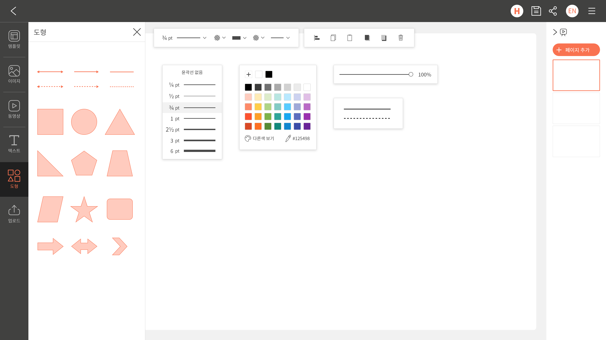
이 프로젝트는 아이스크림 홈런 전용 태블릿 앱 구축을 위한 Vue 기반 퍼블리싱 작업이었다. 라우터 이동이 많지 않고, 각 화면이 독립적인 컴포넌트로 구성되어 있어 구조 파악이 용이했으며, 전체 퍼블리싱도 비교적 간결하게 진행되었다. 모든 UI를 컴포넌트 단위로 분리해 구현할 수 있었고, 페이지 간 복잡한 라우팅보다는 컴포넌트 간 연동에 집중할 수 있어 작업 효율과 개발 속도 모두에서 높은 생산성을 경험할 수 있었다.
이번 경험을 통해 Vue 프로젝트에서 컴포넌트를 활용한 작업의 장점과 효율성을 다시 한번 실감할 수 있었다.
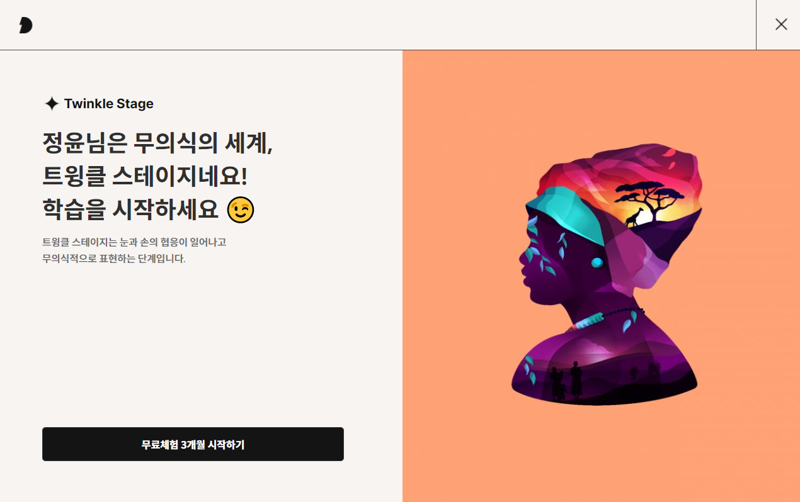
이 프로젝트는 아이스크림 홈런 전용 태블릿 앱의 Vue 환경에서 퍼블리싱을 담당한 작업으로, 전체 스타일 단위를 px 대신 rem으로 적용한 것이 특징이었다. 레이아웃 구조 자체는 복잡하지 않았고, 디자인 시안도 명확히 정리되어 있어 퍼블리싱 과정은 비교적 원활하게 진행되었다. rem 단위를 사용한 덕분에 기본적인 반응형 대응에도 유연하게 작동하여, 다양한 화면 해상도에서도 안정적인 구성이 가능했다.
다만, 프로젝트 후반부에는 웹뷰 환경에서만 발생하는 특이 이슈들이 등장하면서, 테스트와 디버깅에 상당한 시간이 소요되었다. 웹뷰는 일반 브라우저와 렌더링 방식이나 지원 기능에서 차이가 있어, 일반적인 방법으로는 재현되지 않는 문제가 반복 발생했고, 이를 해결하기 위해 환경에 따른 동작 차이를 세심하게 분석해야 했다.
이번 프로젝트를 통해 단위 설계의 중요성과 함께, 디바이스·환경 간 호환성 문제에 유연하게 대응하는 역량을 키울 수 있었으며, 웹뷰와 같은 제한된 환경에서의 테스트와 디버깅 경험 또한 실무적으로 큰 자산이 되었다.

입사 1년 차에 처음으로 반응형 웹 페이지 전체를 단독으로 담당한 작업으로, 개인적으로도 의미가 큰 프로젝트였다.
디자인은 웹, 태블릿, 모바일 환경에 맞춰 구분되어 제공되었으며, 반응형 웹 페이지 작업에 대한 자신감을 얻게 되었다.
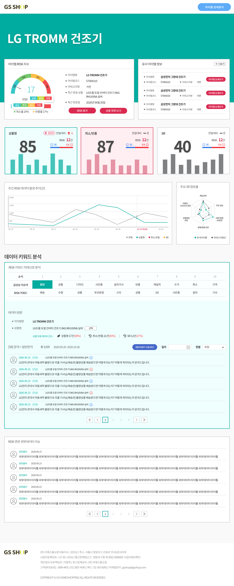
이 프로젝트는 여러 프로젝트를 동시에 진행하던 시점에서 참여하게 되어, 구축보다는 유지보수 업무를 담당하게 되었다. 프로젝트 자체는 차트가 포함된 대시보드/관리자 페이지였기 때문에, 차트와 관련된 부분에서 일정 난이도가 있었던 프로젝트였다.
차트 관련 기능들이 복잡한 부분이 있었고, 기존 코드의 유지보수 작업을 진행하면서 이를 이해하고 수정하는 데 시간이 필요했지만, 전체적으로 큰 문제 없이 작업을 마무리할 수 있었다. 다양한 프로젝트를 동시에 진행하는 과정에서 이 프로젝트는 유지보수의 중요성을 다시 한 번 느끼게 해준 경험이었다. 특히, 이미 구축된 시스템에서 발생할 수 있는 버그나 기능 수정 등을 처리하면서, 이전에 구축된 코드의 구조를 파악하고 수정하는 능력이 향상되었다.
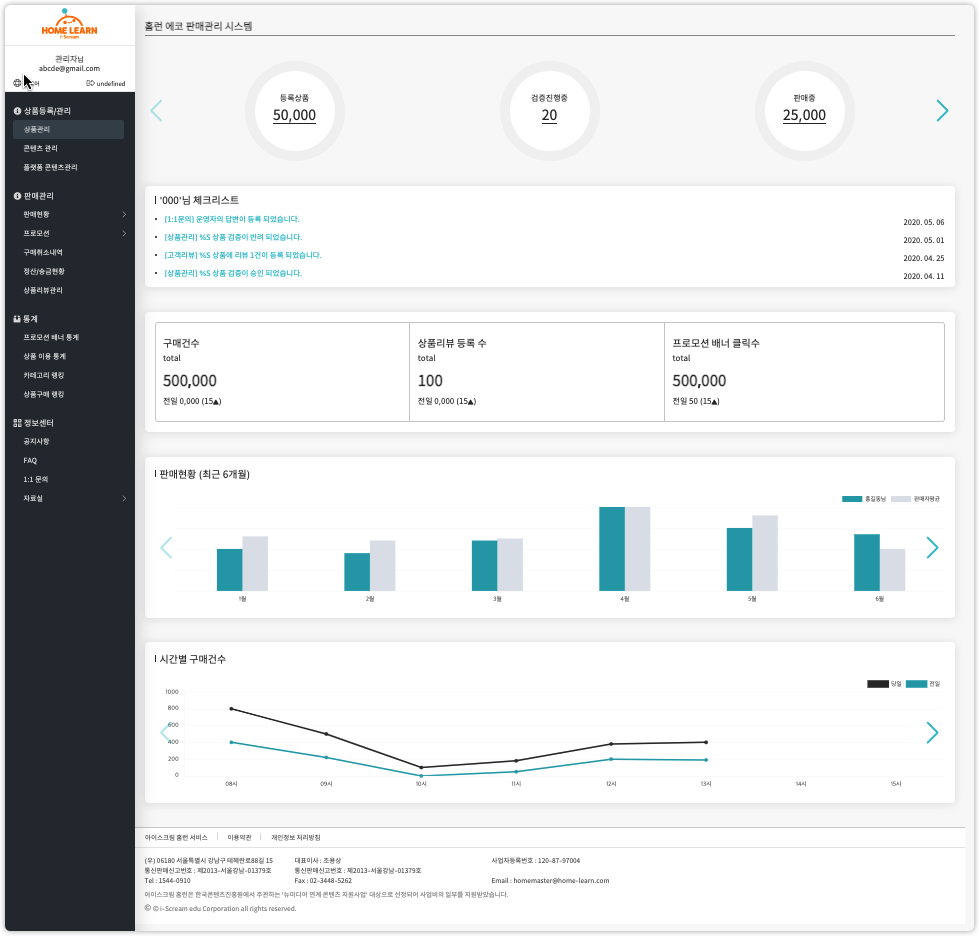
이 프로젝트는 회사 내부 컴포넌트를 활용하여 기획 문서만 보고 관리자 페이지를 만드는 작업이었다. 디자인 검수가 없었던 점은 작업을 진행하는 데 있어 비교적 자유로웠고, 그로 인해 빠르게 진행할 수 있던 부분도 있었다. 그러나 다국어 처리 요청 사항이 있었고, 페이지 수가 총 100페이지 정도 되어 예상보다 많은 시간이 소요되었다.
다국어 처리 부분은 특히 신경을 써야 했고, 다양한 언어에 맞는 텍스트 처리와 레이아웃을 맞추는 과정에서 시간이 걸렸다. 그럼에도 불구하고, 내부 컴포넌트를 활용해 기본적인 구조를 빠르게 잡을 수 있었고, 이를 바탕으로 전체 페이지를 효율적으로 작업할 수 있었다. 프로젝트를 진행하면서, 기획 문서만 보고 작업을 진행하는 방식에서의 도전과 그에 따른 문제 해결 경험이 큰 도움이 되었다. 결국 이 프로젝트는 다국어 처리와 페이지 수를 고려한 효율적인 작업 방식에 대한 중요한 교훈을 준 프로젝트였다.
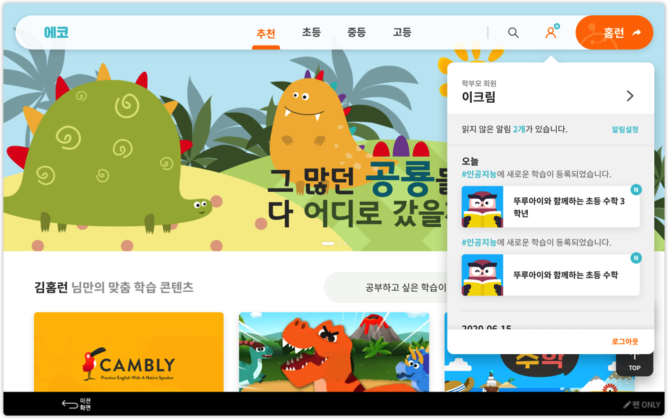
Bootstrap을 이용하여 반응형 웹을 만든 프로젝트였고, Bootstrap의 sm, md, lg, xl의 개념을 완벽하게 이해할 수 있었던 경험이었다. 각 화면 크기에 맞춰 유연하게 레이아웃을 조정할 수 있는 Bootstrap의 그리드 시스템을 활용하면서 반응형 웹을 만드는 과정이 매우 편리하고 효율적이었다.
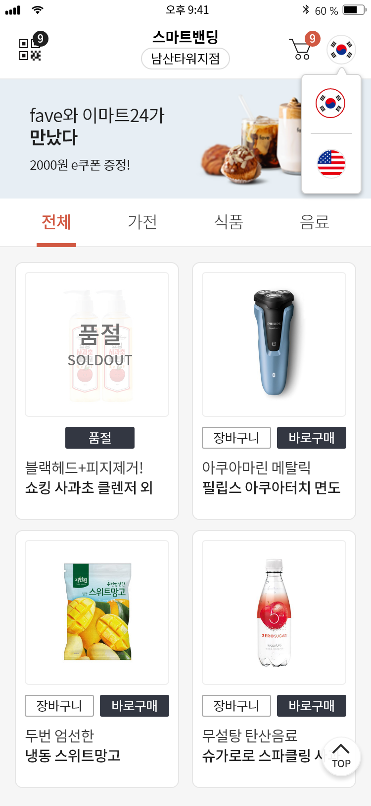
이 프로젝트는 Vue 환경에서 구축한 첫 번째 퍼블리싱 작업이었다.
처음 Vue 프레임워크를 접했기 때문에 일부 구조나 방식이 다소 낯설었지만, vue-bootstrap을 활용하면서 UI 구성과 기본 컴포넌트 처리 등 많은 부분을 보다 수월하게 구현할 수 있었다.
새로운 환경에 적응하며 프로젝트를 완성해 나가는 과정에서 Vue 기반 퍼블리싱 구조에 대한 이해도를 높일 수 있었던 경험이었다.
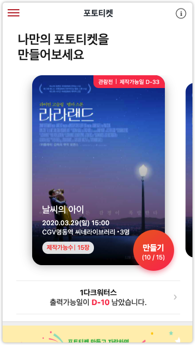
맡은 페이지 수는 그렇게 많지 않았지만, 기존 CGV 소스를 분석하는 데 예상보다 많은 시간이 소요되었다. swiper를 사용한 부분과 포토티켓 UI에서의 flip 인터랙션 구현은 예상보다 많은 고민과 시간을 요구했다. 입사 7개월 차에 혼자 감당하기에는 조금 벅찬 부분도 있었지만, 실력과 자신감을 키울 수 있었던 중요한 경험이었다.
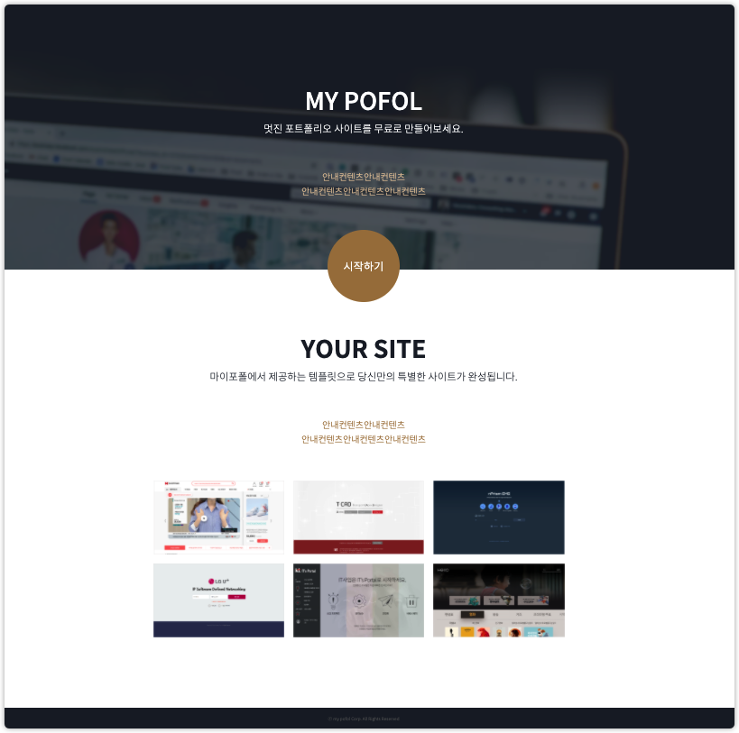
이 프로젝트는 회사 내부에서 진행된 포트폴리오 템플릿 생성 웹사이트로, 퍼블리싱과 동시에 React 개발에도 참여하게 된 회사 내부 프로젝트였다. 당시 JavaScript에 대한 경험이 많지 않았던 터라 React 기반 개발은 상당한 도전이었지만, 팀의 개발자들과 협업하며 프로젝트의 구조와 흐름을 점차 이해할 수 있었다.
작업을 진행하면서 상태 관리, 컴포넌트 설계, 데이터 흐름 처리 등 React의 핵심 개념과 기술들을 실무를 통해 익히게 되었고, 초기에는 어려움이 많았지만 동료들의 지원 덕분에 문제 해결 능력과 자신감 모두 성장할 수 있었다.
이 프로젝트를 통해 개발과 퍼블리싱을 병행하며 기술 역량을 넓힐 수 있었을 뿐 아니라, 무엇보다도 팀워크의 중요성과 협업을 통한 성장의 가치를 깊이 체감할 수 있었던 뜻깊은 경험이었다.
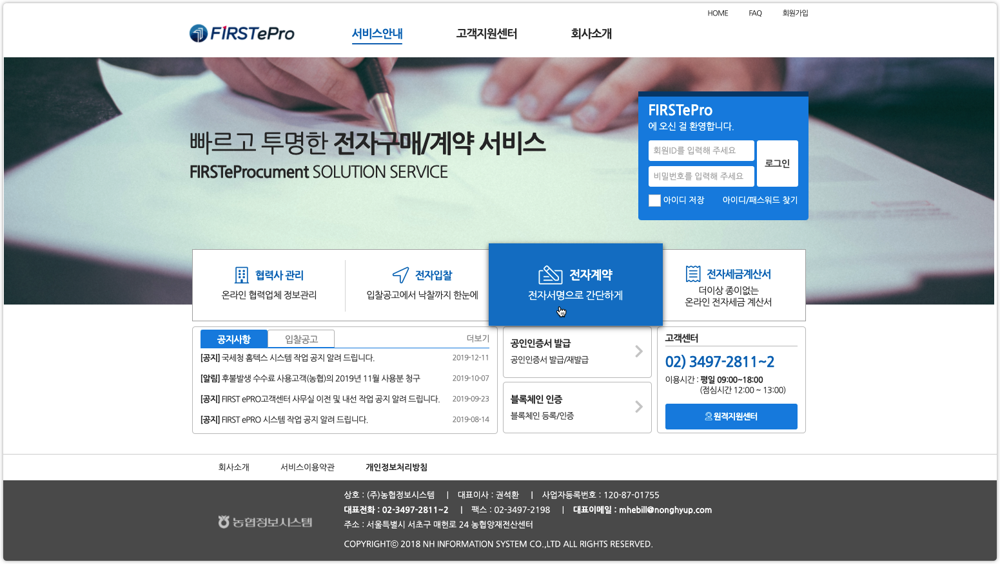
MyUI 시스템에 Bootstrap을 커스터마이징한 스타일을 적용해 퍼블리싱을 진행한 작업이었다. 기존 Bootstrap 컴포넌트의 스타일을 프로젝트 요구사항에 맞게 수정·확장하는 방식으로 구성되었으며, 명확한 스타일 가이드와 구조 덕분에 전반적인 퍼블리싱 작업도 원활하게 진행되었다.
이 프로젝트는 Bootstrap을 커스터마이징하여 npm을 통해 배포한 작업이었다. 프로젝트를 진행하면서 Bootstrap의 구조와 다양한 기능들을 깊이 이해할 수 있었고, 이를 바탕으로 필요한 부분을 커스터마이징하여 프로젝트에 맞게 적용하는 데 큰 도움이 되었다.
특히, Bootstrap의 다양한 컴포넌트와 스타일을 활용하고, 이를 재사용 가능한 형태로 배포하면서 프레임워크의 효율적인 활용 방법을 배울 수 있었다. 회사 내규에 맞춰 진행된 프로젝트였기에, 규정에 맞는 디자인 시스템과 구현 방식에 대해서도 많은 배울 점이 있었다. 전체적으로 이 프로젝트는 Bootstrap을 더 잘 이해하고, 실무에서 어떻게 효율적으로 커스터마이징하여 활용할 수 있는지에 대한 좋은 경험이 되었다.
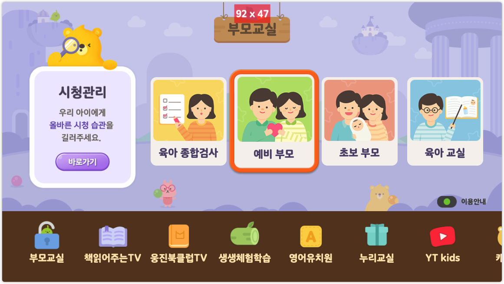
Cuckoo 프로젝트를 진행하면서 동시에 아이들나라 프로젝트를 담당하고 있던 퍼블리셔가 퇴사하게 되어, 갑작스럽게 투입된 프로젝트였다. 처음에는 기존의 히스토리와 TV 앱 개발 프로젝트가 어떻게 진행되고 있는지 파악하는 데 시간이 좀 걸렸지만, 그 과정에서 개발자 분들의 큰 도움이 있었다.
프로젝트의 흐름과 구조를 이해하는 데 필요한 시간이 있었지만, 개발자들과의 협업을 통해 빠르게 적응할 수 있었고, 결국 프로젝트를 잘 마무리할 수 있었다. 이 프로젝트는 급하게 투입되었음에도 불구하고, 팀워크와 커뮤니케이션의 중요성을 다시 한 번 깨닫게 해주었다. 새로운 환경에 빠르게 적응하면서, 더 많은 경험을 쌓을 수 있었던 값진 프로젝트였다.
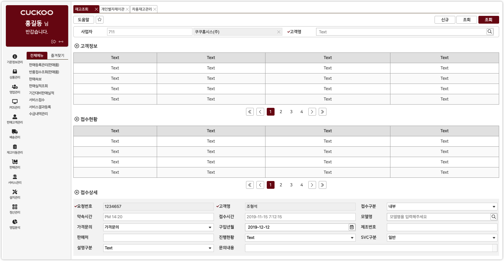
퍼블리셔로서 첫 번째로 맡은 프로젝트였다. 처음에는 레이아웃을 이해하고 적용하는 데 어려움이 있었지만, bootstrap grid 시스템을 활용한 레이아웃 작업이 큰 도움이 되었다. 이 프로젝트는 퍼블리셔로서의 첫 발을 내딛는 중요한 경험이었다.